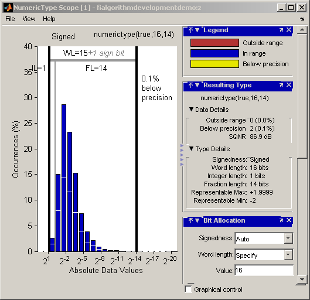
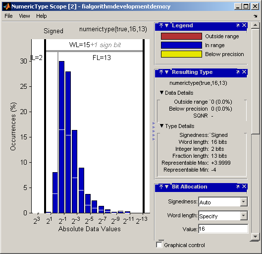
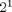
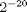
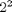
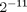
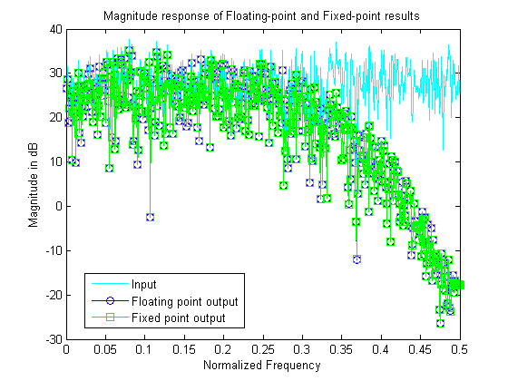
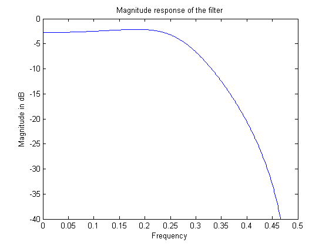
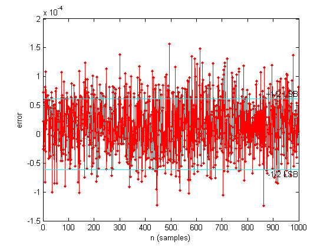
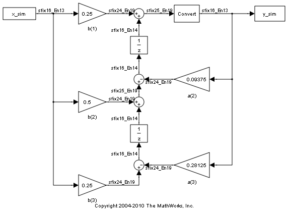

Fixed-Point Algorithm Development
Shows the development and verification of a simple fixed-point algorithm.
Contents
- Simple Example of Algorithm Development
- Floating-Point Variable Definitions
- Data-Type-Independent Algorithm
- Visualize Dynamic Range
- Instrument Floating-Point Code
- Analyze Information in the Scope
- Fixed-Point Variable Definitions
- Same Data-Type-Independent Algorithm
- Compare and Plot the Floating-Point and Fixed-Point Results
- Plot the Error
- Simulink®
- Assumptions Made for this Example
Simple Example of Algorithm Development
This example shows the development and verification of a simple fixed-point filter algorithm. We will follow the following steps:
1) Implement a second order filter algorithm and simulate in double-precision floating-point.
2) Instrument the code to visualize the dynamic range of the output and state.
3) Convert the algorithm to fixed-point by changing the data type of the variables - the algorithm itself does not change.
4) Compare and plot the fixed-point and floating-point results.
Floating-Point Variable Definitions
We develop our algorithm in double-precision floating-point. We will use a second-order lowpass filter to remove the high frequencies in the input signal.
b = [ 0.25 0.5 0.25 ]; % Numerator coefficients a = [ 1 0.09375 0.28125 ]; % Denominator coefficients % Random input that has both high and low frequencies. rstream = RandStream.create('mt19937ar','seed',2009); reset(rstream); x = randn(rstream,1000,1); % Pre-allocate the output and state for speed. y = zeros(size(x)); z = [0;0];
Data-Type-Independent Algorithm
This is a second-order filter that implements the standard difference equation:
y(n) = b(1)*x(n) + b(2)*x(n-1) + b(3)*x(n-2) - a(2)*y(n-1) - a(3)*y(n-2)
for k=1:length(x) y(k) = b(1)*x(k) + z(1); z(1) = (b(2)*x(k) + z(2)) - a(2)*y(k); z(2) = b(3)*x(k) - a(3)*y(k); end % Save the Floating-Point Result ydouble = y;
Visualize Dynamic Range
In order to convert to fixed-point, we need to know the range of the variables. Depending on the complexity of an algorithm, this task can be simple or quite challenging. In this example, the range of the input value is known, so selecting an appropriate fixed-point data type is simple. We will concentrate on the output (y) and states (z) since their range is unknown. To view the dynamic range of the output and states, we will modify the code slightly to instrument it. We will create two NumericTypeScope objects and view the dynamic range of the output (y) and states (z) simultaneously.
Instrument Floating-Point Code
hscope1 = NumericTypeScope; hscope2 = NumericTypeScope; for k=1:length(x) y(k) = b(1)*x(k) + z(1); z(1) = (b(2)*x(k) + z(2)) - a(2)*y(k); z(2) = b(3)*x(k) - a(3)*y(k); % process the data and update the visual. step(hscope1,z); end step(hscope2,y); 
Analyze Information in the Scope
Let us first analyze the information displayed for variable z (state). From the histogram we can see that the dynamic range lies between ( ].
By default, the scope uses a word length of 16 bits with zero tolerable overflows. This results in a data type of numerictype(true,16, 14) since we need at least 1 integer bit to avoid overflows. With this suggested type, values that require more than 14 fractional bits to represent itself will cause an underflow, which is 0.1% in this case and is negligible. You can get more information on the statistical data from the Input Data and Resulting Type panels. From the Input Data panel we can see that the data has both positive and negative values and hence a signed quantity which is reflected in the suggested numerictype. Also, the maximum data value is 1.8 which can be represented by the suggested type.
Next, let us look at variable y (output). From the histogram plot we see that the dynamic range lies between ( ].
By default, the scope uses a word length of 16 bits with zero tolerable overflows. This results in a data type of numerictype(true,16, 13) since we need at least 2 integer bits to avoid overflows. With this suggested type you see no overflows or underflows. Supposing the application is tolerant to a small amount of overflows, we can optimize the wordsize further. By setting the Maximum Overflow parameter on the Bit Allocation panel to 0.5%, we can reduce the integer length by 1 bit and gain more precision.
Fixed-Point Variable Definitions
We convert variables to fixed-point and run the algorithm again. We will turn on logging to see the overflows and underflows introduced by the selected data types.
% Turn on logging to see overflows/underflows. fp = fipref; default_loggingmode = fp.LoggingMode; fp.LoggingMode = 'On'; % Capture the present state of and reset the global fimath to the factory % settings. globalFimathAtStartOfThisDemo = fimath; resetglobalfimath; % Define the fixed-point types for the variables in the below format: % fi(Data, Signed, WordLength, FractionLength) b = fi(b, 1, 8, 6); a = fi(a, 1, 8, 6); x = fi(x, 1, 16, 13); y = fi(zeros(size(x)), 1, 16, 13); z = fi([0;0], 1, 16, 14);
Same Data-Type-Independent Algorithm
for k=1:length(x) y(k) = b(1)*x(k) + z(1); z(1) = (b(2)*x(k) + z(2)) - a(2)*y(k); z(2) = b(3)*x(k) - a(3)*y(k); end % Reset the logging mode. fp.LoggingMode = default_loggingmode;
In this example, we have redefined the fixed-point variables with the same names as the floating-point so that we could inline the algorithm code for clarity. However, it is a better practice to enclose the algorithm code in an MATLAB® file function that could be called with either floating-point or fixed-point variables. See filimitcycledemo.m for an example of writing and using a datatype-agnostic algorithm.
Compare and Plot the Floating-Point and Fixed-Point Results
We will now plot the magnitude response of the floating-point and fixed-point results and the response of the filter to see if the filter behaves as expected when it is converted to fixed-point.
n = length(x); f = linspace(0,0.5,n/2); x_response = 20*log10(abs(fft(double(x)))); ydouble_response = 20*log10(abs(fft(ydouble))); y_response = 20*log10(abs(fft(double(y)))); plot(f,x_response(1:n/2),'c-',... f,ydouble_response(1:n/2),'bo-',... f,y_response(1:n/2),'gs-'); ylabel('Magnitude in dB'); xlabel('Normalized Frequency'); legend('Input','Floating point output','Fixed point output','Location','Best'); title('Magnitude response of Floating-point and Fixed-point results');
h = freqz(double(b),double(a),n/2); clf hax = axes; plot(hax,f,20*log10(abs(h))); set(hax,'YLim',[-40 0]); title('Magnitude response of the filter'); ylabel('Magnitude in dB') xlabel('Frequency');
Notice that the high frequencies in the input signal are attenuated by the low-pass filter which is the expected behavior.
Plot the Error
clf n = (0:length(y)-1)'; e = double(lsb(y)); plot(n,double(y)-ydouble,'.-r', ... [n(1) n(end)],[e/2 e/2],'c', ... [n(1) n(end)],[-e/2 -e/2],'c') text(n(end),e/2,'+1/2 LSB','HorizontalAlignment','right','VerticalAlignment','bottom') text(n(end),-e/2,'-1/2 LSB','HorizontalAlignment','right','VerticalAlignment','top') xlabel('n (samples)'); ylabel('error')
Simulink®
If you have Simulink® and Simulink® Fixed Point™, you can run this model, which is the equivalent of the algorithm above. The output, y_sim is a fixed-point variable equal to the variable y calculated above in MATLAB code.
As in the MATLAB code, the fixed-point parameters in the blocks can be modified to match an actual system; these have been set to match the MATLAB code in the example above. Double-click on the blocks to see the settings.
if license('test','Fixed-Point_Blocks') % Set up the From Workspace variable x_sim.time = n; x_sim.signals.values = x; x_sim.signals.dimensions = 1; % Run the simulation simopts = simset('SrcWorkspace','current'); sim('fitdf2filter_demo',[],simopts) % Open the model fitdf2filter_demo % Verify that the Simulink results are the same as the MATLAB file isequal(y, y_sim) end
ans =
1
 Assumptions Made for this Example
In order to simplify the example, we have taken the default math parameters: round-to-nearest, saturate on overflow, full precision products and sums. We can modify all of these parameters to match an actual system.
The settings were chosen as a starting point in algorithm development. Save a copy of this MATLAB file, start playing with the parameters, and see what effects they have on the output. How does the algorithm behave with a different input? See the help for fi, fimath, and numerictype for information on how to set other parameters, such as rounding mode, and overflow mode.
close all force; bdclose all; % Reset the global fimath globalfimath(globalFimathAtStartOfThisDemo);